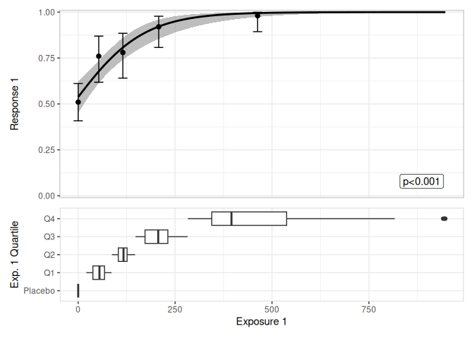
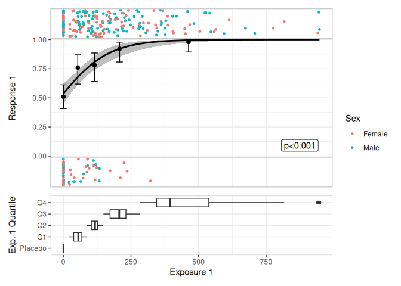
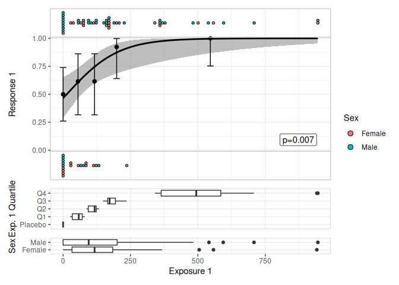
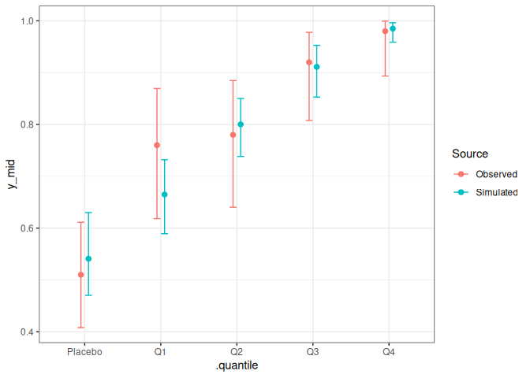
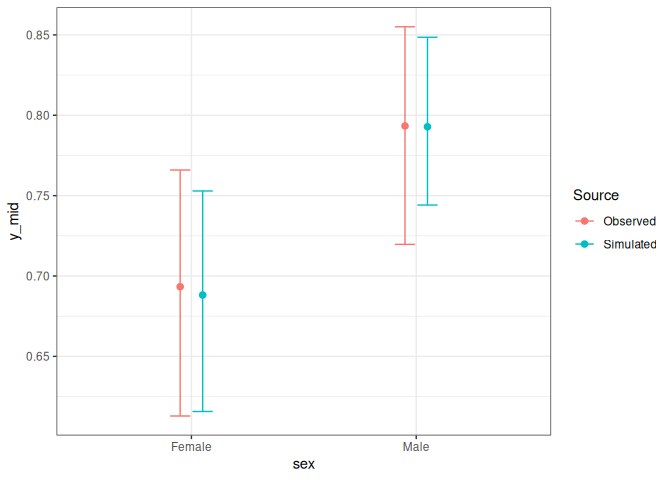

Provides estimation and plotting tools for exposure-response models that use logistic regression for binary responses. It is mostly intended as a convenience package: the core tools are wrappers around glm(), and the plotting tools use ggplot2 and patchwork to build typical plots used in exposure-response modelling.
Example
library(erlr)
library(dplyr)
#>
#> Attaching package: 'dplyr'
#> The following objects are masked from 'package:stats':
#>
#> filter, lag
#> The following objects are masked from 'package:base':
#>
#> intersect, setdiff, setequal, union
library(tibble)
lr_data
#> # A tibble: 300 × 7
#> id dose exposure_1 quartile_1 response_1 response_2 sex
#> <int> <dbl> <dbl> <fct> <dbl> <dbl> <fct>
#> 1 1 100 148. Q3 1 1 Male
#> 2 2 100 79.7 Q1 1 0 Male
#> 3 3 200 212. Q3 1 0 Male
#> 4 4 200 236. Q3 0 0 Female
#> 5 5 0 0 Placebo 1 0 Male
#> 6 6 200 71.0 Q1 1 0 Female
#> 7 7 100 173. Q3 1 0 Male
#> 8 8 100 123. Q2 0 0 Female
#> 9 9 0 0 Placebo 0 0 Male
#> 10 10 200 165. Q3 1 0 Female
#> # ℹ 290 more rows
mod <- lr_model(response_1 ~ exposure_1, lr_data)
mod
#>
#> Call: stats::glm(formula = formula, family = stats::binomial(link = "logit"),
#> data = data)
#>
#> Coefficients:
#> (Intercept) exposure_1
#> 0.15078 0.01112
#>
#> Degrees of Freedom: 299 Total (i.e. Null); 298 Residual
#> Null Deviance: 341.7
#> Residual Deviance: 283.9 AIC: 287.9
lr_data |>
lr_plot(exposure_1, response_1) |>
lr_plot_add_quantiles(bins = 4) |>
lr_plot_add_boxplot(group_by = quartile_1) |>
print()
#> Warning: annotation$theme is not a valid theme.
#> Please use `theme()` to construct themes.
lr_data |>
lr_plot(exposure_1, response_1) |>
lr_plot_add_quantiles(bins = 4) |>
lr_plot_add_jitter_strips(color_by = sex) |>
lr_plot_add_boxplot(group_by = quartile_1) |>
print()
#> Warning: annotation$theme is not a valid theme.
#> Please use `theme()` to construct themes.
lr_data[1:70,] |>
lr_plot(exposure_1, response_1) |>
lr_plot_add_quantiles(bins = 4) |>
lr_plot_add_dotplot_strips(color_by = sex) |>
lr_plot_add_boxplot(group_by = quartile_1) |>
lr_plot_add_boxplot(group_by = sex) |>
print(box_height = 2)
#> Warning: annotation$theme is not a valid theme.
#> Please use `theme()` to construct themes.
mod <- lr_model(response_1 ~ exposure_1 + sex, lr_data)
sim <- lr_vpc_sim(mod)
sim
#> # A tibble: 30,000 × 5
#> response_1 exposure_1 sex row_id sim_id
#> <dbl> <dbl> <fct> <int> <int>
#> 1 0.889 148. Male 1 1
#> 2 0.777 79.7 Male 2 1
#> 3 0.946 212. Male 3 1
#> 4 0.953 236. Female 4 1
#> 5 0.568 0 Male 5 1
#> 6 0.732 71.0 Female 6 1
#> 7 0.916 173. Male 7 1
#> 8 0.838 123. Female 8 1
#> 9 0.568 0 Male 9 1
#> 10 0.896 165. Female 10 1
#> # ℹ 29,990 more rows
lr_vpc_plot(mod, sim, group_by = exposure_1)
lr_vpc_plot(mod, sim, group_by = sex)